배우기 전에 먼저 해 보세요. 틀려도 괜찮아요.
길에서 모르는 사람에게 길을 물을 때 먼저 하는 말은 무엇일까요?
말을 걸 때는 Entschuldigung으로 시작해요.
'저는 버스를 타고 가요'는 어떻게 말할까요?
mit 뒤에서 der Bus의 der는 dem으로 바뀌어요.
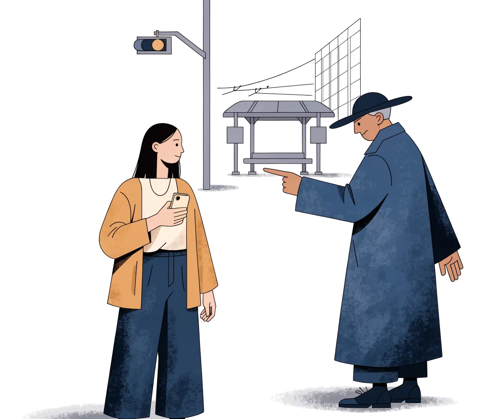
새 도시에서는 길을 묻고 교통편을 알아야 어디든 갈 수 있어요. Jiu는 도서관 가는 길을 묻고, Sora는 동물원에 가는 표를 사고, Dohyun은 손님에게 회사 오는 길을 알려 줘요.
문법 Imperativ (Sie), mit, zu, nach, bei + Dativ, Wo? in, an, auf + Dativ
과제대학캠퍼스에서 도서관과 강의실 가는 길 묻기
과제직장회사와 거래처 가는 길 설명하기
이 과를 마치면 길을 묻고 알려 주고, 표를 사고, 무엇을 타고 가는지 말할 수 있어요.
이 과에서 쓸 말이에요. 눌러서 먼저 들어 보세요.
배우기 전에 먼저 해 보세요. 틀려도 괜찮아요.
길에서 모르는 사람에게 길을 물을 때 먼저 하는 말은 무엇일까요?
말을 걸 때는 Entschuldigung으로 시작해요.
'저는 버스를 타고 가요'는 어떻게 말할까요?
mit 뒤에서 der Bus의 der는 dem으로 바뀌어요.
토요일 오전, 보켄하임의 거리예요. Jiu가 대학 도서관을 찾고 있어요.
들으면서 찾아보세요. 도서관까지 걸어서 얼마나 걸리나요?
일요일 아침, 프랑크푸르트 중앙역이에요. Sora가 딸 Hana와 동물원에 가려고 해요. 역 직원에게 물어요.
들으면서 찾아보세요. Sora는 어느 역에서 갈아타나요?
월요일 오후, Dohyun의 사무실이에요. 내일 회사에 오는 Herr Schneider가 전화로 길을 물어요.
들으면서 찾아보세요. Herr Schneider는 무엇을 타고 프랑크푸르트에 오나요?
세 대화를 듣고 답하세요.
Jiu는 무엇을 찾고 있나요?
Jiu muss an der Ampel rechts gehen.
신호등에서 왼쪽으로 가요.
도서관까지 걸어서 얼마나 걸리나요?
Sora는 어디에서 갈아타나요?
Eine Einzelfahrkarte kostet 3,80 Euro.
Hana의 표는 얼마인가요?
Herr Schneider는 무엇을 타고 프랑크푸르트에 오나요?
Die Firma ist bei der Apotheke.
낱말 44개예요. 낱말이나 예문 앞의 단추를 누르면 소리가 나요. 명사는 der, die, das를 색으로 구분했어요.
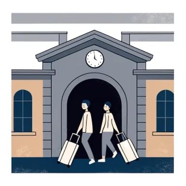
der Bahnhof, die Bahnhöfe 역
Wo ist der Bahnhof?역이 어디예요?
der Hauptbahnhof, die Hauptbahnhöfe 중앙역
Ich komme um neun am Hauptbahnhof an.아홉 시에 중앙역에 도착해요.
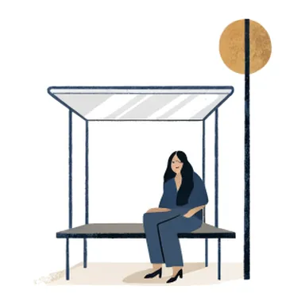
die Haltestelle, die Haltestellen 정류장
Die Haltestelle ist an der Ecke.정류장은 모퉁이에 있어요.
die Station, die Stationen (지하철) 역, 정거장
Das sind nur zwei Stationen.두 정거장밖에 안 돼요.
die Post 우체국
Die Post ist am Platz.우체국은 광장에 있어요.
die Bank, die Banken 은행
Ich muss heute zur Bank gehen.오늘 은행에 가야 해요.
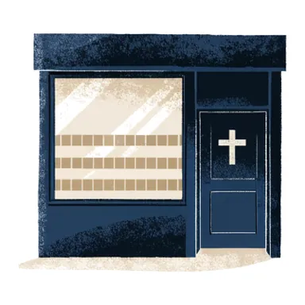
die Apotheke, die Apotheken 약국
Die Firma ist bei der Apotheke.회사는 약국 근처에 있어요.
das Rathaus, die Rathäuser 시청
Der Bus fährt zum Rathaus.그 버스는 시청으로 가요.
die Bibliothek, die Bibliotheken 도서관
Ich suche die Bibliothek.도서관을 찾고 있어요.
der Platz, die Plätze 광장, 자리
Die Bibliothek ist am Platz.도서관은 광장에 있어요.
der Park, die Parks 공원
Die Kinder spielen im Park.아이들이 공원에서 놀아요.
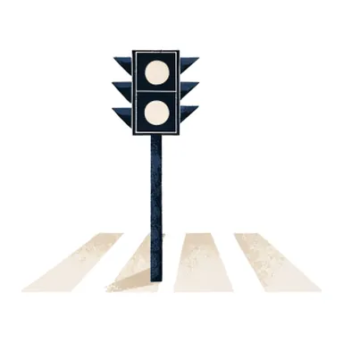
die Ampel, die Ampeln 신호등
Gehen Sie an der Ampel links.신호등에서 왼쪽으로 가세요.
die Ecke, die Ecken 모퉁이
Das Café ist an der Ecke.카페는 모퉁이에 있어요.
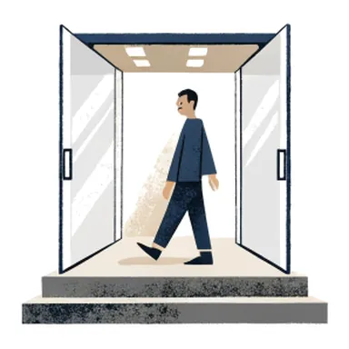
der Eingang, die Eingänge 입구
Ich warte am Eingang.입구에서 기다릴게요.
das Zentrum, die Zentren 중심, 시내
Das Rathaus ist im Zentrum.시청은 시내 중심에 있어요.
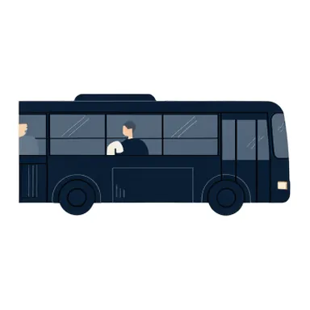
der Bus, die Busse 버스
Ich fahre mit dem Bus.저는 버스를 타고 가요.
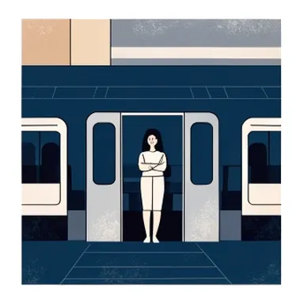
die U-Bahn, die U-Bahnen 지하철
Nehmen Sie die U-Bahn.지하철을 타세요.
die S-Bahn, die S-Bahnen 도시 철도
Die S-Bahn fährt nach Mainz.그 도시 철도는 마인츠로 가요.
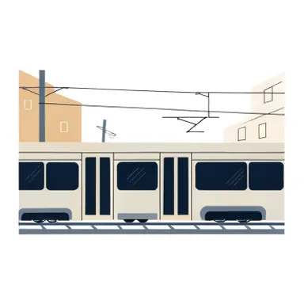
die Straßenbahn, die Straßenbahnen 전차, 트램
Die Straßenbahn fährt zum Bahnhof.그 전차는 역으로 가요.
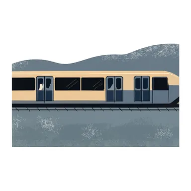
der Zug, die Züge 기차
Der Zug kommt um neun Uhr an.기차는 아홉 시에 도착해요.
das Auto, die Autos 자동차
Kommen Sie mit dem Auto?차로 오세요?
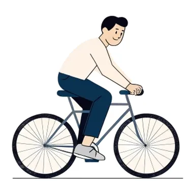
das Fahrrad, die Fahrräder 자전거
Markus fährt mit dem Fahrrad ins Büro.Markus는 자전거를 타고 사무실에 가요.
zu Fuß 걸어서
Ich gehe zu Fuß.저는 걸어서 가요.
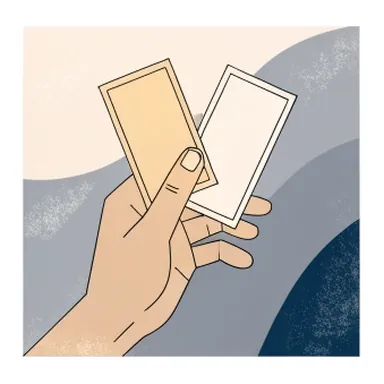
die Fahrkarte, die Fahrkarten 차표
Was kostet eine Fahrkarte?표는 얼마예요?
der Automat, die Automaten 자동판매기
Sie können die Fahrkarte am Automaten kaufen.표는 자동판매기에서 살 수 있어요.
die Linie, die Linien 노선
Die Linie 4 fährt zum Hauptbahnhof.4번 노선은 중앙역으로 가요.
umsteigen 갈아타다
Sie müssen am Hauptbahnhof umsteigen.중앙역에서 갈아타셔야 해요.
einsteigen 타다
Wir steigen hier ein.우리는 여기서 타요.
aussteigen 내리다
Steigen Sie an der Station Zoo aus.Zoo 역에서 내리세요.
ankommen 도착하다
Ich komme um neun Uhr an.저는 아홉 시에 도착해요.
abfahren (du fährst ab, er fährt ab) 떠나다, 출발하다
Der Zug fährt um acht Uhr ab.기차는 여덟 시에 떠나요.
der Weg, die Wege 길
Der Weg ist nicht weit.가는 길은 멀지 않아요.
die Treppe, die Treppen 계단
Nehmen Sie hier die Treppe.여기 계단으로 가세요.
suchen 찾다
Ich suche die Post.우체국을 찾고 있어요.
zahlen (돈을) 내다
Kinder zahlen 1,55 Euro.어린이는 1유로 55센트를 내요.
geradeaus 곧장
Gehen Sie hier geradeaus.여기서 곧장 가세요.
links 왼쪽에, 왼쪽으로
Die Bank ist links.은행은 왼쪽에 있어요.
rechts 오른쪽에, 오른쪽으로
Gehen Sie an der Ecke rechts.모퉁이에서 오른쪽으로 가세요.
weit 먼
Ist es weit? – Nein, nur fünf Minuten.먼가요? – 아니요, 5분밖에 안 걸려요.
in der Nähe 근처에
Ist hier eine Apotheke in der Nähe?이 근처에 약국이 있나요?
bis zu ~까지
Gehen Sie bis zur Ampel.신호등까지 가세요.
zurück 되돌아
Wir fahren am Abend zurück.우리는 저녁에 돌아와요.
unten 아래에
Die U-Bahn fährt unten ab.지하철은 아래층에서 떠나요.
wie lange 얼마나 오래
Wie lange brauche ich zu Fuß?걸어서 얼마나 걸려요?
이 과의 낱말로 여덟 문제를 풀어요.
줄을 누르면 소리가 나요. 길을 알려 줄 때는 방향을 나타내는 말과 erste, zweite, dritte처럼 순서를 나타내는 말을 함께 써요.
줄을 누르면 소리가 나요. 탈것 앞에는 mit을 쓰고, 관사가 dem이나 der로 바뀌어요. 걸어서 갈 때만 zu Fuß라고 해요.
규칙
Sie를 쓰는 상대에게 길을 알려 주거나 부탁할 때는 동사를 맨 앞에 놓고 바로 뒤에 Sie를 써요. 동사 모양은 원형과 같아요. 분리동사는 앞부분이 문장 끝으로 가요. bitte를 넣으면 더 공손해요.
| 1 동사 | 2 | 가운데 | 끝 |
|---|---|---|---|
| Gehen | Sie | geradeaus. | |
| Nehmen | Sie | die U-Bahn. | |
| Steigen | Sie | hier | um. |
| Rufen | Sie | bitte | an. |
주의 모양은 네, 아니요로 답하는 질문과 같고 억양만 달라요. 질문은 끝을 올리고, 안내는 끝을 내려요. sein만 모양이 달라서 Seien Sie bitte pünktlich.라고 해요. du에게 하는 말은 3과에서 배워요.
규칙을 보고 바로 확인해 보세요.
Sie에게 무엇을 하라고 말할 때 문장은 무엇으로 시작하나요?
규칙
mit(~을 타고, ~와 함께), zu(~로), bei(~ 근처에, ~ 회사에서) 뒤에는 언제나 Dativ(3격)를 써요. Dativ에서 der와 das는 dem, die는 der, 복수의 die는 den이 돼요. zu dem은 zum, zu der는 zur, bei dem은 beim으로 줄여 써요.
| 1격 | Dativ | 예 | |
|---|---|---|---|
| 남성 | der Bus | dem Bus | mit dem Bus |
| 중성 | das Auto | dem Auto | mit dem Auto |
| 여성 | die U-Bahn | der U-Bahn | mit der U-Bahn |
| 복수 | die Kinder | den Kindern | mit den Kindern |
주의 ein과 mein도 똑같이 바뀌어요. mit einem Freund, mit meiner Tochter. 복수 Dativ에서는 명사 끝에도 -n을 붙여요. 도시와 나라로 갈 때는 zu가 아니라 nach를 쓰고 관사를 붙이지 않아요. nach Mainz, nach Korea. '집으로'는 nach Hause, '집에'는 zu Hause예요.
규칙을 보고 바로 확인해 보세요.
mit 뒤에서 der Bus의 der는 어떻게 바뀌나요?
규칙
있는 곳을 말할 때(Wo?) in, an, auf 뒤에 Dativ를 써요. in은 건물이나 공간 안, an은 바로 옆이나 가장자리, auf는 위나 탁 트인 곳이에요. in dem은 im, an dem은 am으로 줄여 써요.
| in | an | auf | |
|---|---|---|---|
| 남성 | im Park | am Bahnhof | auf dem Platz |
| 중성 | im Zentrum | am Rathaus | auf dem Foto |
| 여성 | in der Stadt | an der Ampel | auf der Straße |
주의 지금까지 통째로 써 온 im Büro, in der Schule, in der Bibliothek가 모두 이 규칙이에요. 길 이름 앞에는 in der를 써요. Die Firma ist in der Musterstraße. 가는 곳을 말할 때(Wohin?)는 규칙이 달라요. 그것은 A2.1에서 배워요. 지금은 ins Kino, ins Büro를 통째로 기억해요.
규칙을 보고 바로 확인해 보세요.
in dem을 줄이면 어떻게 되나요?
길 안내를 듣고 알맞은 것을 고르세요.
어디에서 돌아야 하나요?
Gehen Sie geradeaus und dann die zweite Straße rechts.
어디까지 가야 하나요?
Nehmen Sie den Bus Linie 36 bis zum Rathaus.
우체국까지 얼마나 걸리나요?
Die Post? Die ist nicht weit. Gehen Sie an der Ampel links. Sie brauchen drei Minuten.
어디에서 갈아타나요?
Steigen Sie am Hauptbahnhof um und nehmen Sie die S8 nach Mainz.
Markus와 Dohyun이 출근길 이야기를 해요. 듣고 알맞은 것을 고르세요.
Wie kommst du zur Arbeit?
Markus Dohyun, wie kommst du zur Arbeit? Mit der U-Bahn?
Dohyun Nein, ich wohne in der Nähe. Ich gehe zu Fuß. Ich brauche nur fünfzehn Minuten.
Markus Du hast es gut! Ich fahre mit dem Fahrrad zum Bahnhof und dann mit der S-Bahn. Ich brauche fünfundvierzig Minuten.
Dohyun Fährst du nie mit dem Auto?
Markus Nein. In der Stadt brauche ich kein Auto.
Dohyun은 회사에 어떻게 가나요?
Markus는 역까지 무엇을 타고 가나요?
Markus는 회사까지 얼마나 걸리나요?
박물관 누리집의 찾아오는 길 안내를 읽고, 맞으면 richtig, 틀리면 falsch를 고르세요. Anfahrt는 찾아오는 길, Parkplätze는 주차 자리, Parkhaus는 주차 건물이에요.
Stadtmuseum: Anfahrt
Mit der U-Bahn: Nehmen Sie die Linie U3 bis zur Station Marktplatz. Dann gehen Sie fünf Minuten zu Fuß.
Mit dem Bus: Die Linie 42 fährt zum Museum. Steigen Sie an der Haltestelle Stadtmuseum aus.
Mit dem Auto: Das Museum hat keine Parkplätze. Parken Sie bitte im Parkhaus am Rathaus.
Mit dem Fahrrad: Fahrräder können Sie am Eingang parken.
Die U3 fährt bis zur Station Marktplatz.
Von der Station Marktplatz brauchen Sie zu Fuß fünfzehn Minuten.
역에서 걸어서 5분 걸려요.
Mit dem Bus fahren Sie bis zur Haltestelle Stadtmuseum.
Am Museum können Sie mit dem Auto parken.
박물관에는 주차 자리가 없어요. 시청 옆 주차 건물에 세워요.
Das Parkhaus ist am Rathaus.
Sie에게 하는 안내를 완성하세요. 알맞은 말을 고르세요.
Sie hier geradeaus.
Sie die U-Bahn.
Steigen Sie am Hauptbahnhof .
Sie bis zum Rathaus.
Rufen Sie bitte morgen .
Sie bitte um neun.
mit 뒤에 알맞은 관사를 고르세요.
Ich fahre mit Bus.
Sora fährt mit U-Bahn.
Markus fährt mit Fahrrad.
Wir fahren mit Zug nach Mainz.
Jiu fährt mit Straßenbahn.
Kommen Sie mit Auto?
zum과 zur 가운데 알맞은 말을 고르세요.
Wie komme ich Bahnhof?
Wie komme ich Post?
Gehen Sie bis Ampel.
Der Bus fährt Rathaus.
Ich muss heute Bank gehen.
있는 곳을 나타내는 알맞은 말을 고르세요.
Das Rathaus ist Zentrum.
Die Haltestelle ist Ecke.
Jiu lernt Bibliothek.
Ich komme um neun Hauptbahnhof an.
Die Kinder spielen Platz.
Die Firma ist Musterstraße.
낱말을 순서대로 눌러 문장을 만드세요.
여기서 곧장 가세요.
역에 어떻게 가요?
저는 버스를 타고 일하러 가요.
시청에서 내리세요.
우체국은 모퉁이에 있어요.
알맞은 관사를 고르세요.
Bahnhof
Haltestelle
Auto
Bus
U-Bahn
Fahrrad
Ampel
Zug
반대가 되는 말끼리 짝지으세요.
듣고 그대로 써 보세요.
Entschuldigung, wo ist die Post? 실례합니다, 우체국이 어디예요?
Gehen Sie an der Ampel links. 신호등에서 왼쪽으로 가세요.
Ich fahre mit der U-Bahn. 저는 지하철을 타고 가요.
Entschuldigung, wo ist …? 실례합니다, …이 어디예요?
Wie komme ich zum Bahnhof / zur Post? 역에 / 우체국에 어떻게 가요?
Ich suche … …을 찾고 있어요.
Ist das weit? 먼가요?
Gehen Sie geradeaus. 곧장 가세요.
Gehen Sie an der Ampel links / rechts. 신호등에서 왼쪽 / 오른쪽으로 가세요.
Nehmen Sie die zweite Straße links. 두 번째 길에서 왼쪽으로 가세요.
Das ist in der Nähe. 근처에 있어요.
Nehmen Sie die U-Bahn / den Bus. 지하철을 / 버스를 타세요.
Steigen Sie am Hauptbahnhof um. 중앙역에서 갈아타세요.
Steigen Sie an der Station … aus. … 역에서 내리세요.
Ich fahre mit dem Bus / mit der U-Bahn. 버스를 / 지하철을 타고 가요.
Ich gehe zu Fuß. 걸어서 가요.
Ich brauche zwanzig Minuten. 20분 걸려요.
Was kostet eine Fahrkarte? 표는 얼마예요?
Eine Einzelfahrkarte, bitte. 한 번 타는 표 한 장 주세요.
Wo kann ich Fahrkarten kaufen? 표는 어디에서 살 수 있어요?
Tut mir leid, ich bin nicht von hier. 죄송해요, 저는 이곳 사람이 아니에요.
Noch einmal, bitte. 한 번 더 말해 주세요.
과제 고르기
역할 대화와 말하기, 쓰기 과제는 대학 생활과 직장 생활 두 가지예요. 하나를 고르면 다음 과에서도 그쪽 과제가 나와요. 언제든 바꿀 수 있어요.
대화 A에서 역할을 하나 고르세요. 상대의 말은 음성으로 나오고, 내 차례에는 직접 말해요.
대화 C에서 역할을 하나 고르세요. 상대의 말은 음성으로 나오고, 내 차례에는 직접 말해요.
내가 날마다 가는 곳을 떠올리고 칸을 채우세요. 탈것은 mit dem Bus, mit der U-Bahn, zu Fuß처럼, 가는 곳은 zur Universität, zur Arbeit, zum Kurs처럼 써요. 완성된 문장을 소리 내어 읽어 보세요.
Ich wohne in Bockenheim.
Ich komme mit der U-Bahn zur Universität.
Ich brauche zwanzig Minuten.
대학에 온 첫날이에요. 도서관(Bibliothek)과 3번 강의실(Hörsaal 3)을 찾아야 해요. 지나가는 학생에게 길을 물어요. 학생끼리는 du를 써요.
들은 길을 되풀이해서 확인하고, 끝에 고맙다고 인사해요.
캠퍼스에서 만난 학생에게 도서관과 강의실 가는 길을 물어요. 학생의 말을 듣고 소리 내어 답한 뒤 예시 답과 비교해 보세요.
Hallo! Suchst du etwas? 안녕하세요! 뭐 찾아요?
Ja. Entschuldigung, wo ist die Bibliothek?
Die Bibliothek ist nicht weit. Du gehst hier geradeaus und dann an der Ecke links. 도서관은 멀지 않아요. 여기서 곧장 가다가 모퉁이에서 왼쪽으로 가요.
Geradeaus und dann an der Ecke links. Danke! Und wo ist der Hörsaal 3?
Der Hörsaal 3 ist im Hauptgebäude, rechts am Eingang. 3번 강의실은 본관에 있어요. 입구에서 오른쪽이에요.
Im Hauptgebäude, rechts am Eingang. Ist das weit?
Nein, nur zwei Minuten zu Fuß. Das Hauptgebäude ist dort an der Ampel. 아니요, 걸어서 2분이에요. 본관은 저기 신호등 옆에 있어요.
Ah, dort an der Ampel. Vielen Dank!
Gern. Viel Erfolg! 천만에요. 잘해 봐요!
Danke! Tschüss!
Mein Weg zum Kurs
내가 어학원이나 대학까지 가는 길을 써 보세요. 네 문장이면 충분해요.
Ich wohne in Bockenheim. Ich fahre mit der U-Bahn zur Universität. Ich nehme die U4 und steige am Hauptbahnhof um. Dann fahre ich mit dem Bus bis zur Haltestelle Campus. Ich brauche dreißig Minuten.
다 쓴 뒤에 확인해 보세요.
내 회사는 Kessler Technik이고 주소는 Musterstraße 12예요. 내일 거래처의 Herr Schneider가 처음으로 회사에 와요.
중앙역에서 U4를 타고 Bockenheimer Warte 역에서 내려요. 역에서 오른쪽으로 가다가 두 번째 길에서 왼쪽으로 돌면 Musterstraße예요. 회사는 약국 근처에 있고, 역에서 걸어서 5분 걸려요.
Herr Schneider가 전화로 회사 오는 길을 물어요. 쪽지를 보고 Sie로 안내하세요. 질문을 듣고 소리 내어 답한 뒤 예시 답과 비교해 보세요.
Guten Tag! Ich komme morgen mit dem Zug. Wie komme ich zur Firma? 안녕하세요! 내일 기차로 갑니다. 회사까지 어떻게 가나요?
Guten Tag, Herr Schneider! Nehmen Sie am Hauptbahnhof die U4 bis Bockenheimer Warte.
Bis Bockenheimer Warte. Und dann? Bockenheimer Warte까지요. 그다음에는요?
Gehen Sie an der Station rechts. Nehmen Sie dann die zweite Straße links. Das ist die Musterstraße.
Ist die Firma weit? 회사가 먼가요?
Nein, nur fünf Minuten zu Fuß. Die Firma ist bei der Apotheke.
Gut. Und wo ist der Eingang? 알겠습니다. 입구는 어디예요?
Der Eingang ist an der Ecke. Rufen Sie bitte an, dann komme ich zum Eingang.
Vielen Dank! Bis morgen um zehn. 감사합니다! 내일 열 시에 뵙겠습니다.
Bis morgen, Herr Schneider! Auf Wiederhören!
Eine Wegbeschreibung
내일 회사에 처음 오는 손님에게 오는 길을 알려 주는 메일을 써 보세요. 네 문장이면 충분해요.
Guten Tag, Herr Schneider, nehmen Sie am Hauptbahnhof die U4 bis Bockenheimer Warte. Gehen Sie an der Station rechts und nehmen Sie dann die zweite Straße links. Die Firma ist in der Musterstraße 12, bei der Apotheke. Sie brauchen fünf Minuten zu Fuß. Viele Grüße, Minji Choi
다 쓴 뒤에 확인해 보세요.
Ich kann nach dem Weg fragen.길을 물을 수 있어요.
Ich kann einen Weg beschreiben.길을 알려 줄 수 있어요.
Ich kann sagen, wie ich zur Arbeit oder zum Kurs komme.무엇을 타고 다니는지 말할 수 있어요.
Ich kann eine Fahrkarte kaufen.표를 살 수 있어요.